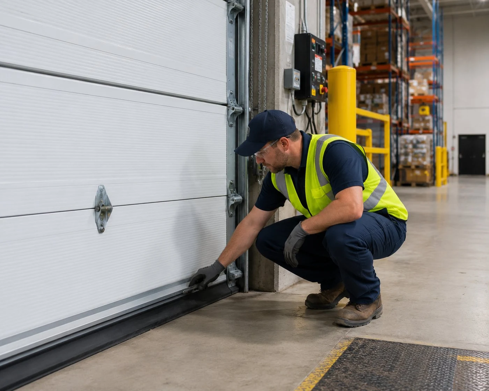

Commercial overhead door service across Columbus
A commercial door that's out of service means delayed shipments, disrupted operations, and potential security exposure. We respond to commercial calls across the Columbus area with the same same-day priority we give residential emergency calls.
We service overhead sectional doors, roll-up steel curtain doors, and high-cycle commercial openers. Commercial door hardware operates under far greater load cycles than residential — springs, cables, and operators wear faster and fail differently. We stock commercial-grade parts and use hardware specified for commercial cycle ratings.

Commercial services we provide
Overhead sectional door repair
Sectional overhead doors on warehouses, loading docks, and commercial buildings are built to a heavier spec than residential doors, but the failure modes are similar — spring failures, cable issues, track damage, and opener problems. We carry commercial spring sets and cable hardware for the most common commercial door sizes. See our overhead door repair page for full residential and commercial service details.
Roll-up door repair
Steel curtain roll-up doors on self-storage facilities, warehouses, and light industrial buildings require different hardware and more significant spring systems than sectional doors. We service the spring barrel assembly, curtain guides, and chain or motor operators on roll-up doors. For full details see our roll-up garage door repair page.
High-cycle commercial opener service
Commercial openers rated for 100,000+ cycles operate very differently from residential units. We service Three-phase operators, industrial-grade chain hoists, and high-speed door operators common in Columbus-area logistics and manufacturing facilities.
"We had a call from a property manager in the Rickenbacker corridor last spring — a loading dock door had lost its spring and was stuck open on a cold night. Their regular contractor couldn't make it until the following morning. We were on site within two hours, replaced the commercial spring set, and had the door operational by midnight. The cost was significantly less than they expected because they'd been quoted commercial emergency rates from their usual vendor. We run those calls at standard pricing."
Commercial service questions
Do you service all commercial door brands?
Yes. We service Overhead Door, Clopay, Wayne Dalton, Cornell, Cookson, and other major commercial door brands. Call us with your door specs and we can confirm parts availability.
How quickly can you respond to a commercial emergency?
For Columbus-area commercial properties, our target is the same as residential — one to two hours on an emergency call. We run commercial and residential emergency calls with the same priority.
Do you offer maintenance contracts?
We can schedule annual or semi-annual commercial door maintenance visits. Call us to discuss your property's needs and usage levels.
What's the cost for commercial door repair?
Commercial spring replacement runs $300–$700+ depending on spring size and door weight. Opener repair or replacement is $400–$1,200+. Call for a quote specific to your door.